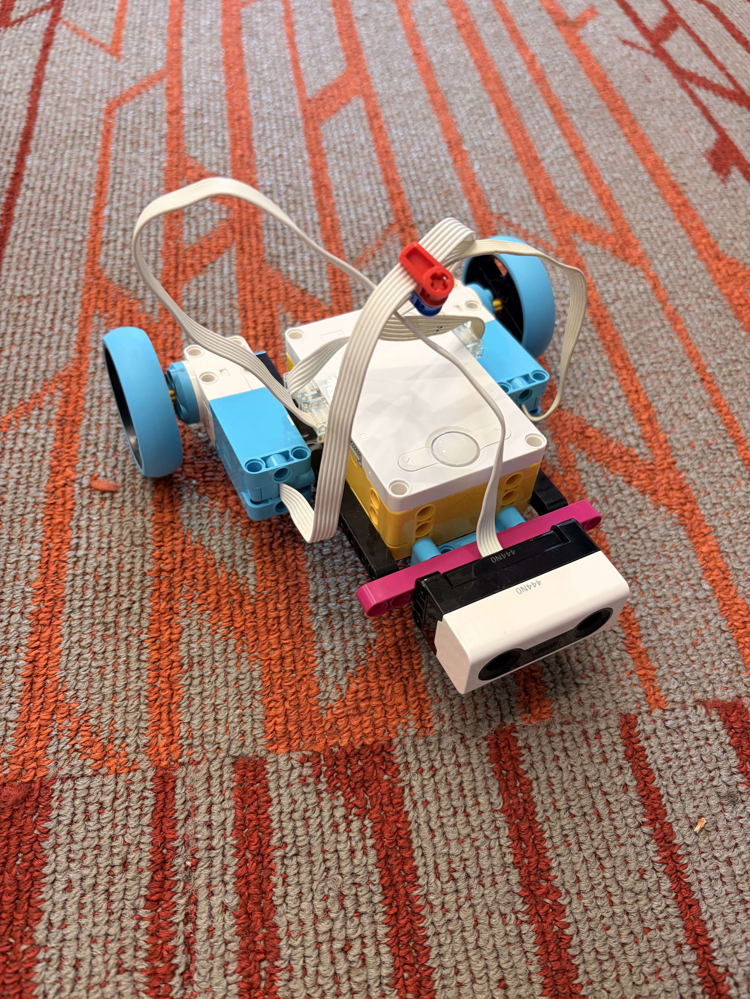
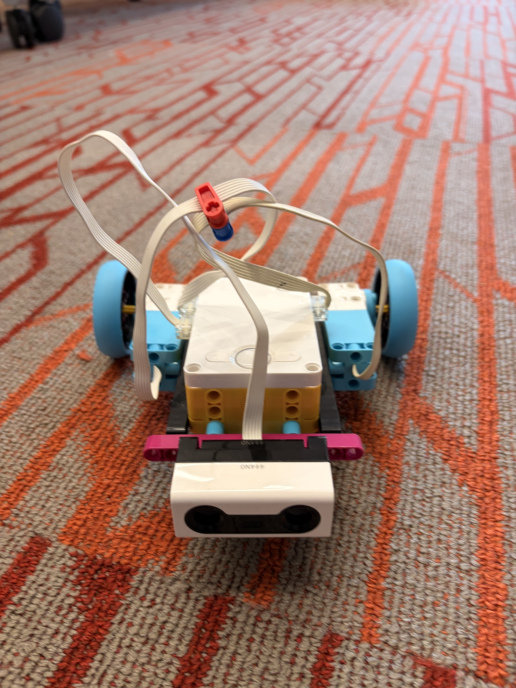
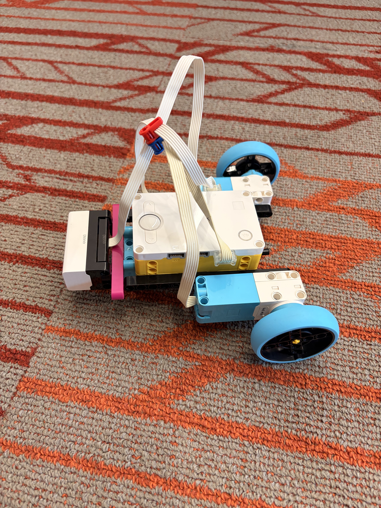
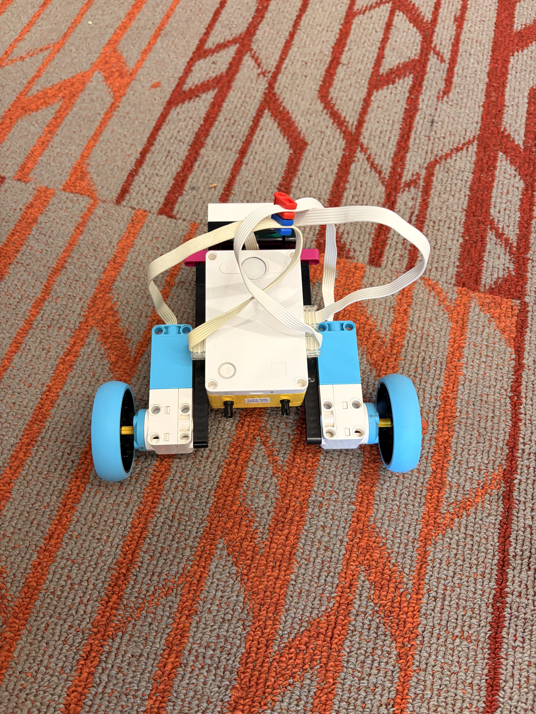
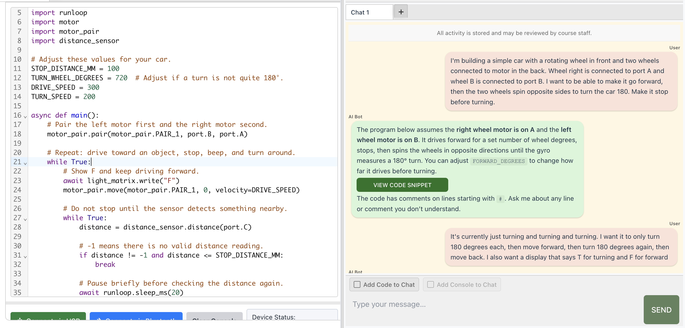

Objective: Build something that can turn and also connect with Bluetooth.
For this project, I built a simple LEGO car that drives forward until its sensor detects an object in front of it. Every time it detects an object, the car makes a sound and turns, showing the letter "T" (for turning) on the hub, the heart of the car. I coded the car using CodeRobots.ai.
The challenge in this project was finding a way to get the code to be generated the way I prompted it. I had to go through multiple trials of code before achieving the end product.



Here is part of the code and my conversation with the AI assistant in CodeRobots.ai.
